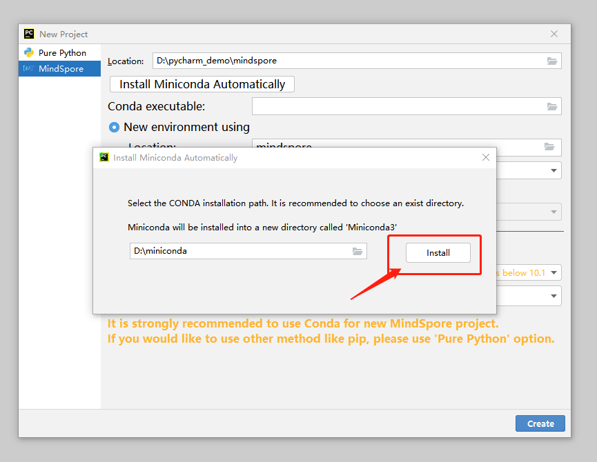
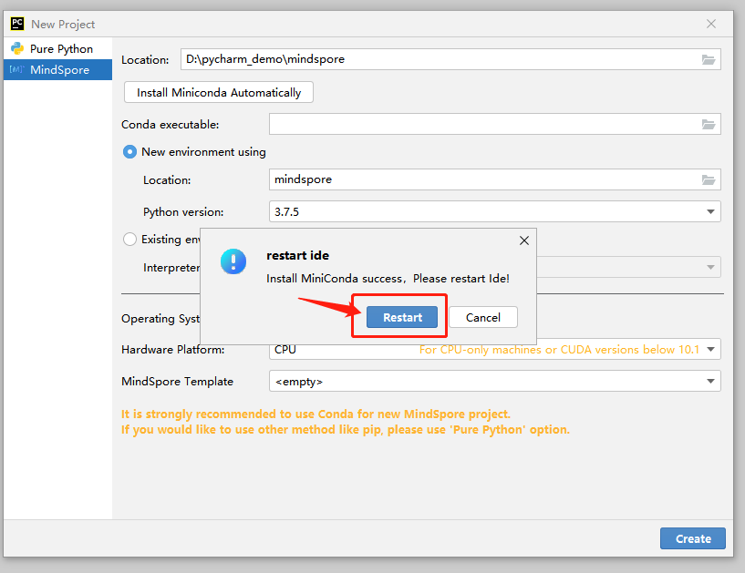
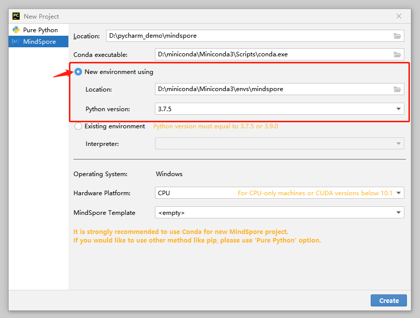
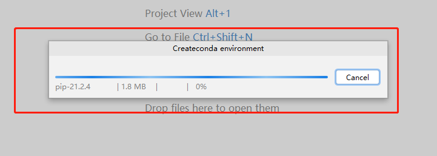
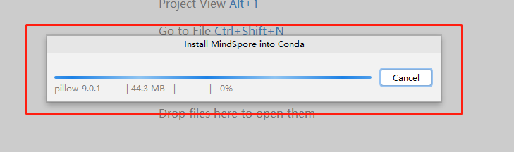
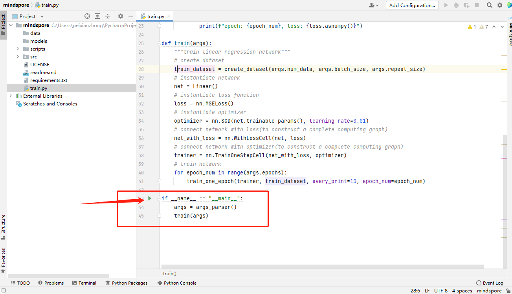
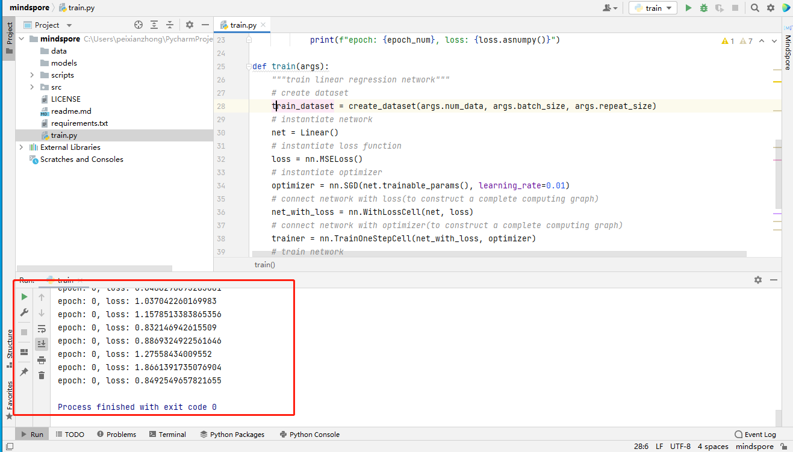

创建项目

技术背景
本功能的实现基于conda。Conda是一个包管理和环境管理系统，是MindSpore推荐的安装方式之一。
功能介绍
创建conda环境或选择已有conda环境，并安装MindSpore二进制包至conda环境。
部署最佳实践模版。不仅可以测试环境是否安装成功，对新用户也提供了一个MindSpore的入门介绍。
在网络状况良好时，10分钟之内即可完成环境安装，开始体验MindSpore。最大可节约新用户80%的环境配置时间。
使用步骤
选择File -> New Project。

选择MindSpore。

Miniconda下载安装。已经安装过conda的可以跳过此步骤。
3.1 点击Install Miniconda Automatically按钮。

3.2 选择下载安装文件夹。建议不修改路径，使用默认路径安装conda。

3.3 点击Install按钮，等待下载安装。


3.4 Miniconda下载安装完成。

3.5 根据提示重新启动PyCharm或者稍后自行重新启动PyCharm。注意：接下来的步骤必须重启PyCharm后方可继续

确认Conda executable路径已正确填充。 如果Conda executable没有自动填充，点击文件夹按钮，选择本地已安装的conda的路径。

创建或选择已有的conda环境。
创建新的conda环境。 建议不修改路径，使用默认路径创建conda环境。由于PyCharm限制，Linux系统下暂时无法选择默认目录以外的地址。

选择PyCharm中已有的conda环境。

选择硬件环境和MindSpore项目最佳实践模板。
6.1 选择硬件环境。

6.2 选择最佳实践模板。最佳实践模版是MindSpore提供一些样例项目，以供新用户熟悉MindSpore。最佳实践模版可以直接运行。

点击Create按钮新建项目，等待MindSpore下载安装成功。
7.1 点击Create按钮创建MindSpore新项目。
7.2 正在创建创建conda环境。

7.3 正在通过conda配置MindSpore。

创建MindSpore项目完成。

验证MindSpore项目是否创建成功。
点击下方Terminal，输入 python -c “import mindspore;mindspore.run_check()” ，查看输出。 如下图，显示了版本号等，表示MindSpore环境可用。

如果选择了最佳实践模版，可以通过运行最佳实践，测试MindSpore环境。

